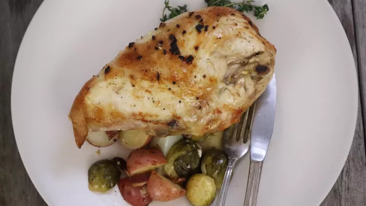

Pan-Roasted Chicken with Lemon-Garlic Brussels Sprouts and Potatoes

A delicious one-pan dinner that tastes
like you cooked all day but only takes a small amount of hands-on
time.
Great
flavor and easy clean-up! They make extra sprouts and your family will loves them.
Ingridients
- 4 slices bacon, chopped
- 1 1 tablespoon olive oil
- 1 lemon thinly sliced
- 5 Tablespoon olive oil
- 1 lemon juiced
- 4 clovesgarlic, minced
- 1 teaspoon kosher salt
- 1/2 teaspoon ground black pepper
- 1/2 pound brussels sprouts trimmed and halved
- 8 small red potatoes, quartered
- 4 bone-in, skin-on chicken breast halves
Steps
- Place the bacon in a large, deep skillet,
and cook over medium-high heat, turning occasionally,
until lightly browned but still soft, about 5 minutes.
Drain the bacon slices on a paper towel-lined plate.
- Preheat an oven to 450 degrees F (230 degrees C).
- Coat a large baking dish or cast iron skillet with 1 tablespoon olive oil.
- Arrange lemon slices in a single layer on the bottom of the baking dish.
- Stir remaining 5 tablespoons olive oil, lemon juice,
garlic, kosher salt, and black pepper together in a large bowl.
- Toss Brussels sprouts in lemon juice mixture to coat;
transfer to the prepared baking dish with a slotted spoon,
draining excess liquid back into the bowl.
- Place bacon on top of the Brussels sprouts.
- Toss potatoes in the same lemon juice mixture used for the Brussels sprouts.
- Remove potatoes with slotted spoon and arrange along the inside edge of the baking dish.
- Coat chicken breast halves thoroughly in the remaining lemon mixture
- Place chicken breasts skin-side up in the skillet; pour any remaining lemon juice mixture over chicken.
- Bake in the preheated oven until chicken no longer pink at the bone
and the juices run clear, about 60 minutes.
Aninstant-read thermometer inserted near the bone should read 165 degrees F (74 degrees C).